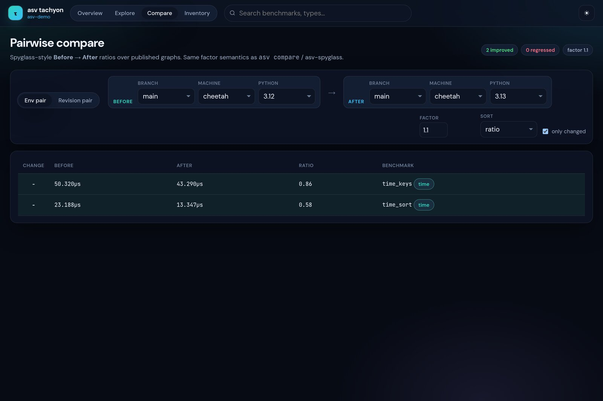
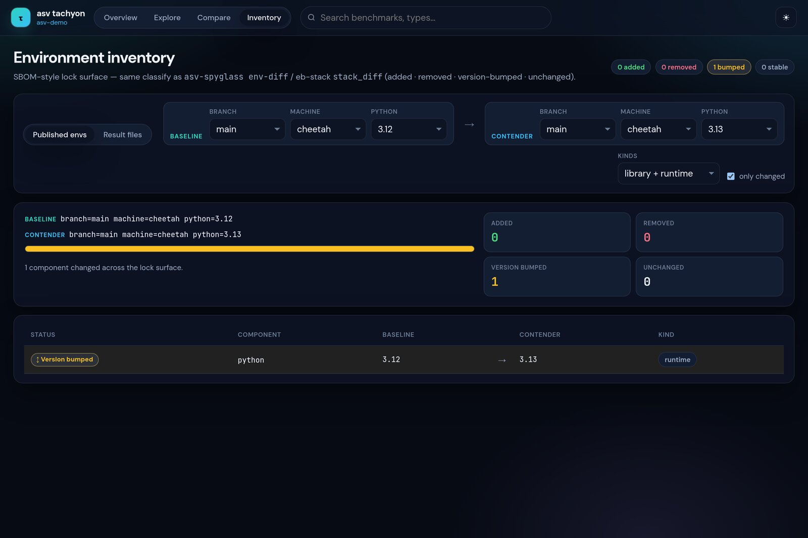
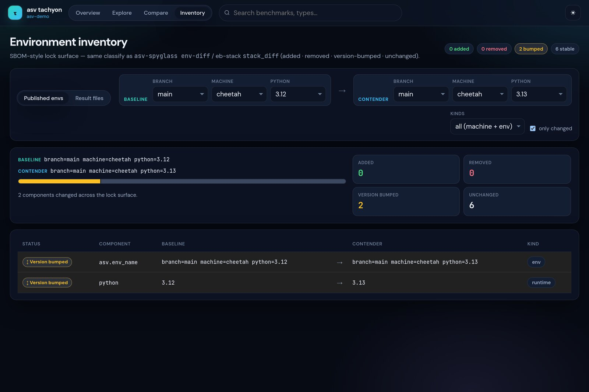

Views#
Overview#
Sparkline tiles for every benchmark, filtered by the published params
(machine, branch, python, …). Search matches name or type.

Explore#
Full uPlot series for a single benchmark. Env filters (machine, branch, python, …) are preserved when switching benchmarks; the URL hash records view, selected bench, and filters for shareable links.
When a benchmark declares params, each flat param combination is a separate
series with a stable color (hiding a series does not reshuffle the palette).
Toggle series from the param chip row.
Compare#
Spyglass-style ratios with the same factor semantics as asv compare /
asv-spyglass compare-many. Modes:
Env columns — select N entries from
graph_param_list(first selected is the baseline; each further env is a contender column with value + ratio)Revision pair — two commits on one env surface
Factor default is 1.1. Click a row for an overlay chart of the first two
env series.
{kind=link}

Regressions#
Loads optional regressions.json (same 7-tuple feed as the stock ASV site).
Factor slider / number input filters rows by last/best. Click a row to open
Explore with the env filters and param index applied.
Inventory#
SBOM-style lock surface (mirrors asv-spyglass env-diff / eb-stack
stack_diff):
Published envs — diff
params+ machine facts fromindex.jsonResult files — drop two raw ASV result JSON files for the full requirements matrix
Classifies each component as added, removed, version-bumped, or unchanged, with KPI cards and a stacked mix bar.
{kind=link}

{kind=link}

All kinds also surfaces env name and machine attributes when they differ.